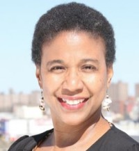

At the festival
Biography
Leslie Fields-Cruz is the executive director of Black Public Media, the nation’s only nonprofit solely dedicated to the development of nonfiction Black content for distribution on public media. Leslie joined BPM in 2001 to manage its program development fund. She served as director of programs from 2005-2008 and as VP of programs and operations from 2008-2014 before being named BPM’s third executive director in 2014. Leslie is the creator of BPM’s award-winning anthology series, AfroPoP: The Ultimate Cultural Exchange, now in its 14th season, which features contemporary stories from the African diaspora. Under her leadership, BPM has cultivated new partnerships, diversified revenues, and initiated vital new programs (360 Incubator+, PitchBLACK Forum & Awards, BPMplus, and the Black Media Story Summit) that support Black talent and content development. In 2021, Leslie was named to Crain’s New York’s list of Notable Black Business Leaders. A graduate of U.C. Berkeley (BA) and NYU (MA), she is a board member of New Era Creative Space, and in September 2022, was named board president of New York Women in Film and Television.
From the festival website (archived), 2025
Other bios (2)
Leslie Fields-Cruz is executive director of Black Public Media, dedicated to nonfiction Black content on public media. Creator of AfroPoP: The Ultimate Cultural Exchange, she has expanded partnerships and programs supporting Black talent. Named to Crain's New York's Notable Black Business Leaders, she holds degrees from U.C. Berkeley and NYU.
From the 2025 catalogue, p. 31
Executive Director, Black Public Media
From the 2022 catalogue, p. 41